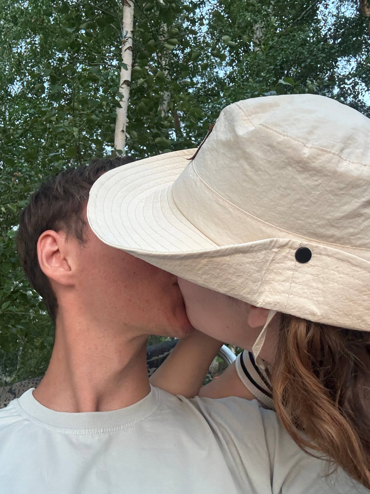
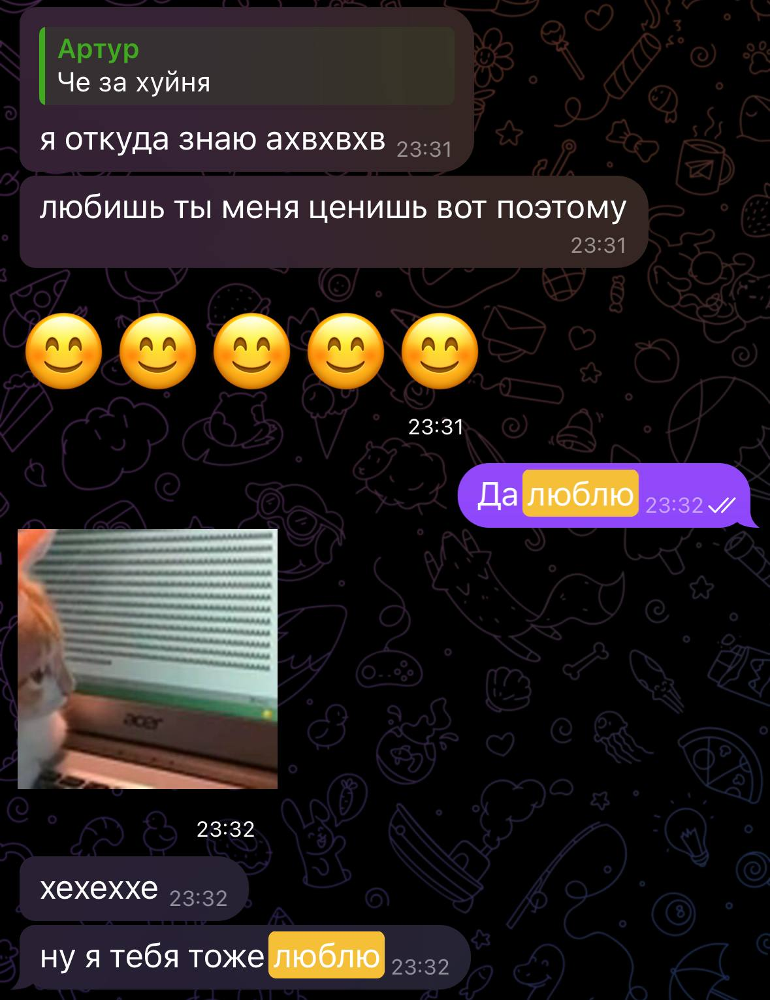
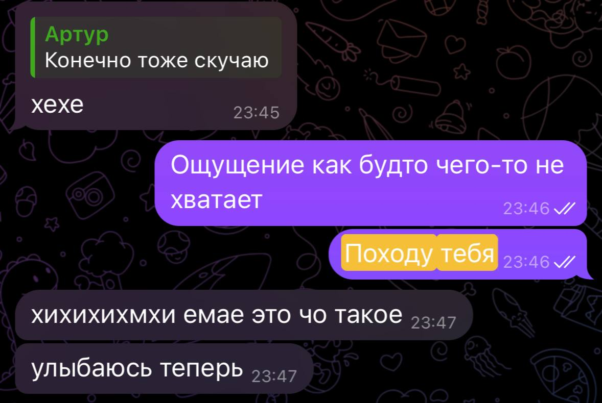
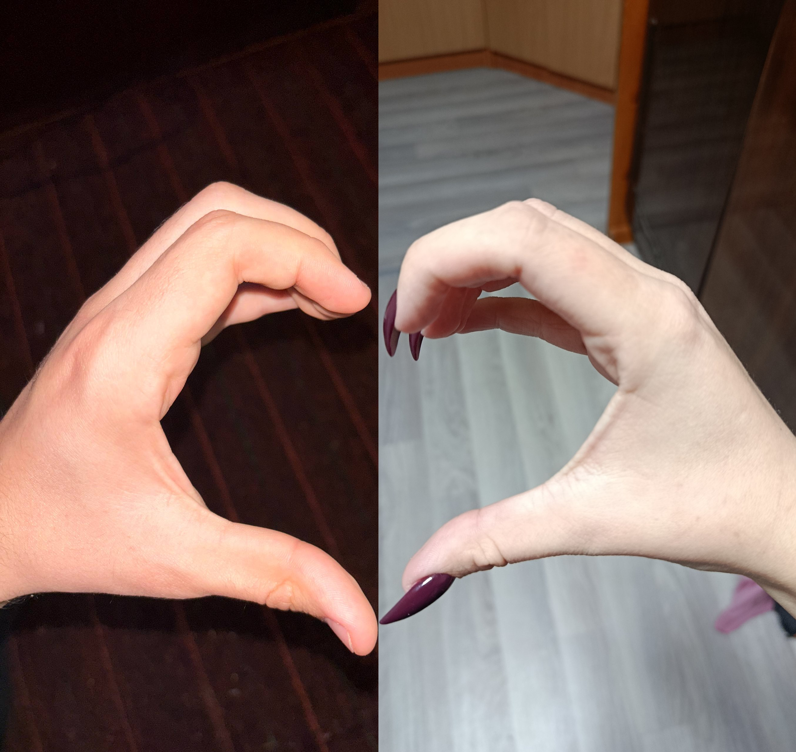

Великолепные моменты ✨
То, что я никогда не забуду
Первый поцелуй
Он случился 13 апреля, мы долго к этому готовились, настраивались, договорились, стеснялись, особенно ты, говорила «Вот я щас поцелую и убегу», он случился стоя под дождём. Мне этот поцелуй запомнился и понравился, хоть ты его и назвала «просто чмок».

Первое «люблю»
Оно произошло 22 апреля, после того как погуляли на БСХТ и я тебя тогда жёстко зацеловал. Это было такое необычное чувство, как будто я переборол себя, набрался смелости и начал тебя целовать, после этого состоялся наш диалог, в котором я сказал тебе, что люблю тебя.

Переломный момент
Он случился 8 апреля, после небольшой разлуки, я понял, что не могу без тебя, ты мой самый любимый, самый близкий человек. В тот момент я чувствовал, что мне чего-то не хватает, и мне не хватало тебя. И сейчас мне тебя не хватает.

Наша первая фотография
За эти 49 дней, что мы встречались, у нас не было ни одной совместной фотографии. Она появилась на твоём дне рождении 23 мая — нас сфоткала твоя подруга Даяна.

Пол года
Прошло ровно пол года, как мы с тобой начали встречаться. Ровно пол года назад я стал счастливым — и ровно пол года, как я счастлив находиться с тобой. И так будет всегда. Моя любовь к тебе растёт с каждым днём, не смотря на твои обидки и тому подобное, я всегда буду тебя любить, жопка моя, просто оставайся рядом. Как говорится — дальше больше, в будущем у нас с тобой всё будет, сможем себе позволить что захотим, просто нужно работать, верить и поддерживать друг друга.
